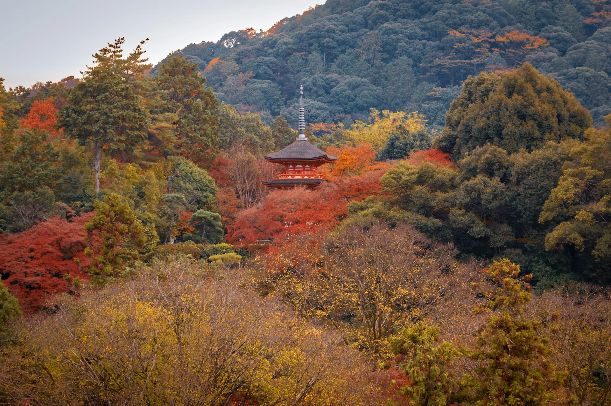

About Kyoto
- Country: Japan
- Region: Kansai
- Prefecture: Kyoto Prefecture
- Population: Approximately 1.4 million
- Area: Approximately 828 km²
- Language: Japanese
- Currency: Japanese Yen (JPY)
- Time Zone: Japan Standard Time (UTC+9)
Weather
- Temperature: 9°C
- Condition: Partly Cloudy
- Wind Speed: 10 km/h
- Wind Chill: